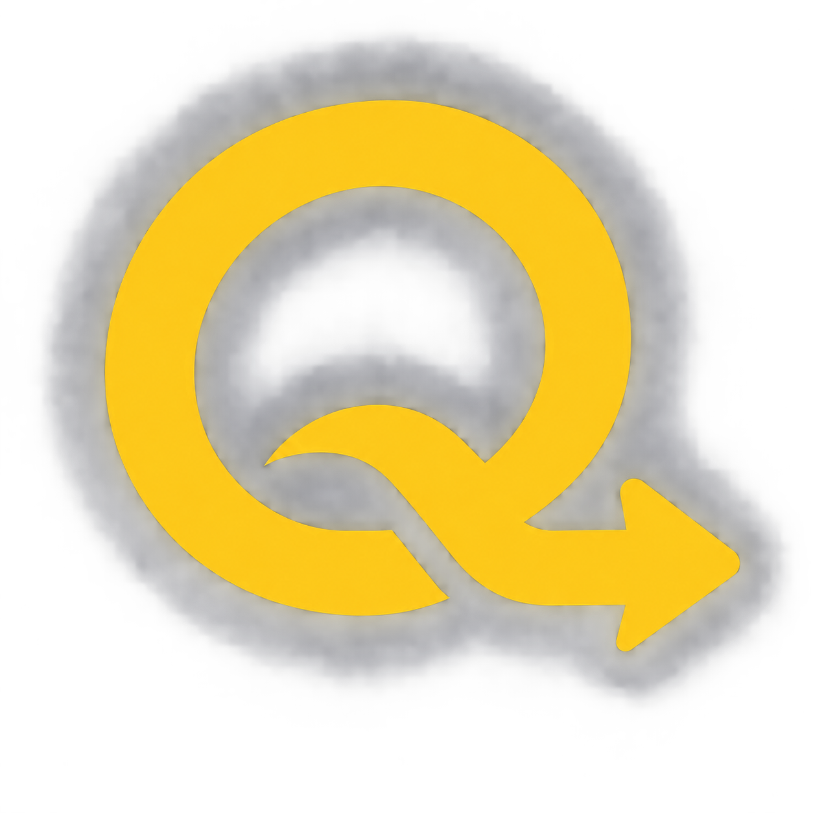
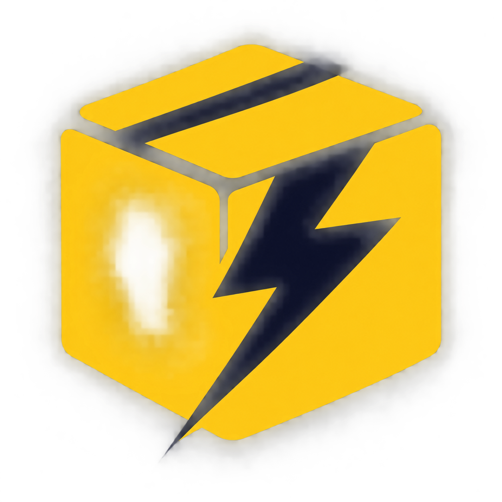
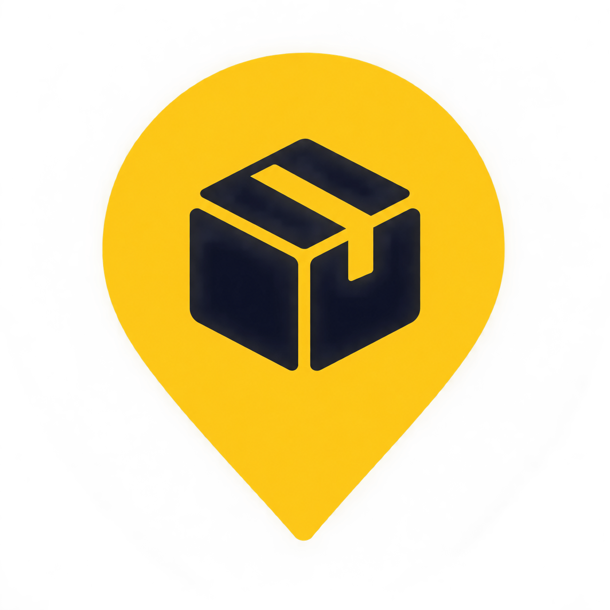
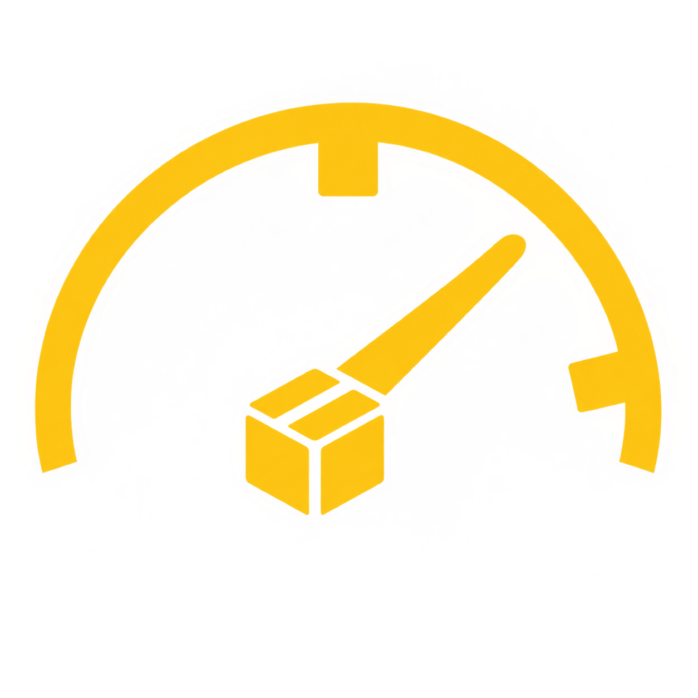
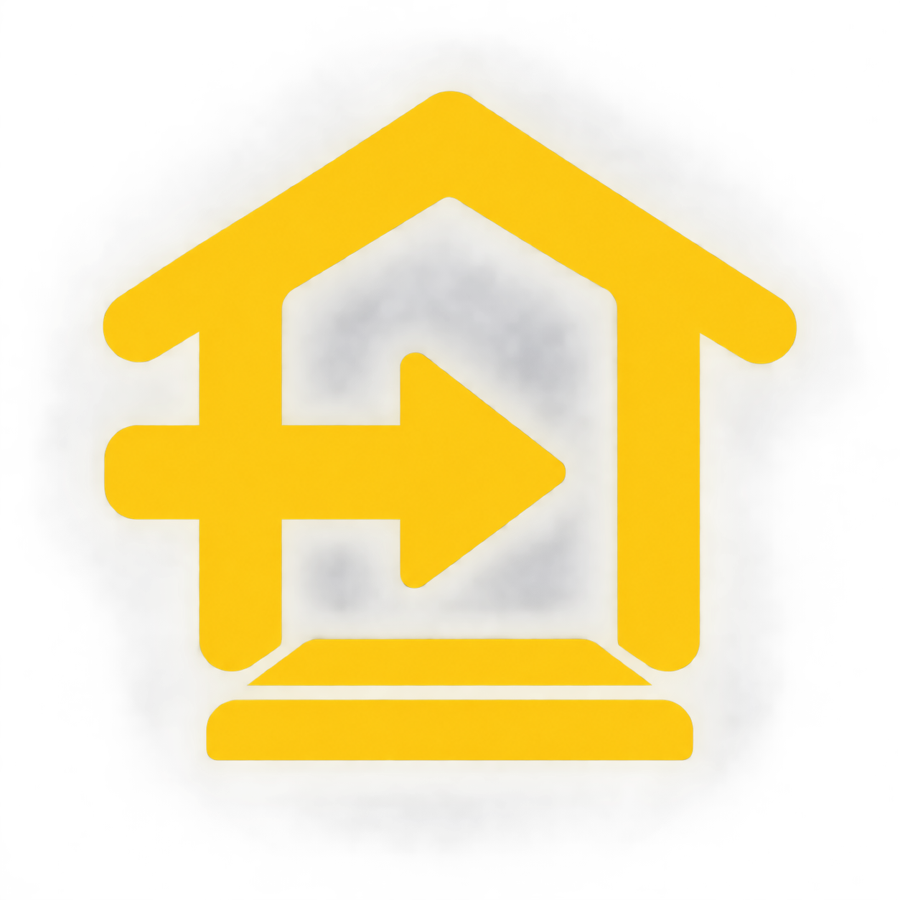

1. Q 화살표
추천
기존 Q 정체성을 유지하면서 작은 크기에서 가장 또렷한 방향입니다.
이미지를 누르면 원본 크기로 볼 수 있습니다. 현재는 선택용 초안이며, 고른 후보는 작은 크기에 맞게 평면화해서 다시 다듬습니다.

기존 Q 정체성을 유지하면서 작은 크기에서 가장 또렷한 방향입니다.

배송과 속도를 가장 직접적으로 보여줍니다.

정확한 배송 위치와 구역 관리의 의미가 분명합니다.

앱의 측정과 시간당 타수 기능을 강조한 방향입니다.

문앞 배송과 완료의 의미를 직관적으로 보여줍니다.